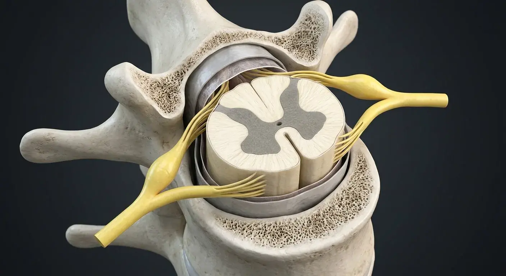
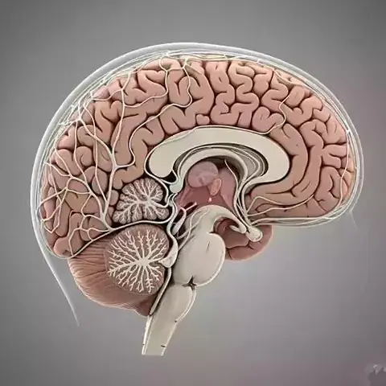
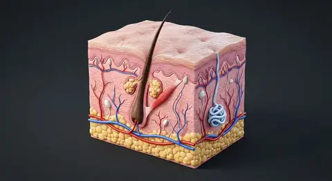
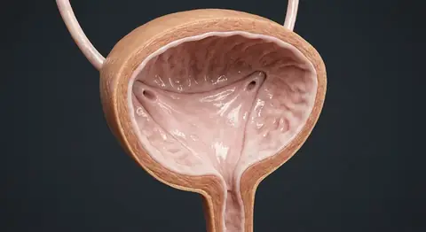

White funiculi & tractsFasciculus gracilisAnterior median fissureAnterior spinal arteryArachnoid & subarachnoid spaceDura materVentral rootSpinal nervePosterior spinal arteriesDorsal root & ganglionFasciculus cuneatusPosterior (dorsal) hornPosterior median sulcusLateral hornCentral canalLateral corticospinal tractAnterior (ventral) hornAnterolateral pathwayPia mater & denticulate ligamentsConus medullarisCauda equinaFilum terminale- 01Posterior (dorsal) horn
- 02Anterior (ventral) horn
- 03Lateral horn
- 04Central canal
- 05White funiculi & tracts
- 06Dura mater
- 07Arachnoid & subarachnoid space
- 08Pia mater & denticulate ligaments
- 09Dorsal root & ganglion
- 10Ventral root
- 11Spinal nerve
- 12Anterior median fissure
- 13Posterior median sulcus
- 14Fasciculus gracilis
- 15Fasciculus cuneatus
- 16Lateral corticospinal tract
- 17Anterolateral pathway
- 18Anterior spinal artery
- 19Posterior spinal arteries
- 20Conus medullaris
- 21Filum terminale
- 22Cauda equina
How this part of the body works
Running through the protective tunnel of the vertebral column, the spinal cord is a two-way superhighway linking the brain with every trunk and limb segment. In cross-section the cord shows an H- or butterfly-shaped core of grey matter — posterior (sensory) horns, lateral (autonomic) horns in thoracic segments and anterior (motor) horns — around the central canal. White matter surrounds it in funiculi carrying the dorsal column–medial lemniscus (fine touch, proprioception), the spinothalamic tracts (pain, temperature) and the corticospinal tracts (voluntary movement). Dorsal roots carry sensory fibres with their cell bodies in the dorsal root ganglion; ventral roots carry motor fibres. Three meninges and the denticulate ligaments suspend the cord in CSF. Within the human body, the spinal cord (Medulla spinalis) is situated in vertebral canal, foramen magnum to L1/L2, receives arterial perfusion via anterior spinal artery + two posterior, reinforced by radicular arteries, and is innervated by 31 pairs of spinal nerves; ascending & descending tracts.
The posterior (dorsal) horn (Cornu posterius) is the slender upper horns receiving sensory afferents; laminae I–VI including the substantia gelatinosa. Physiologically, the posterior (dorsal) horn governs first synapse for pain, temperature and touch; gate control of nociception happens here. The anterior (ventral) horn (Cornu anterius) is the broad lower horns containing the lower motor neuron cell bodies and Renshaw cells. Physiologically, the anterior (ventral) horn governs final common pathway: alpha motor neurons innervate skeletal muscle. Structurally, the lateral horn (Cornu laterale) comprises present only in T1–L2, holding preganglionic sympathetic neurons (and S2–S4 parasympathetic equivalents). Physiologically, the lateral horn governs origin of the sympathetic outflow. The central canal (Canalis centralis) is the ependyma-lined remnant of the neural tube lumen, continuous with the fourth ventricle. Physiologically, the central canal governs circulates a trickle of CSF within the cord. Structurally, the white funiculi & tracts (Funiculi) comprises dorsal columns (fasciculus gracilis & cuneatus), lateral spinothalamic and corticospinal tracts, and spinocerebellar tracts. Physiologically, the white funiculi & tracts governs highways for sensation upward and motor commands downward. The dura mater is the tough outer sleeve, ending as the dural sac at S2 with the filum terminale beyond. Physiologically, the dura mater protects and forms the epidural and subarachnoid boundaries.
Clinically, regarding the posterior (dorsal) horn, loss of the spinothalamic decussation at a segment causes a segmental band of lost pain and temperature (syringomyelia). From a diagnostic standpoint, in the anterior (ventral) horn, poliovirus and ALS destroy these cells, giving flaccid paralysis, wasting and fasciculation. In clinical pathology involving the lateral horn, horner syndrome follows interruption of the T1 lateral horn or its pathway (e.g. Pancoast tumour). Medical evaluation of the central canal also notes that its dilatation defines syringomyelia, classically causing a cape-like loss of pain and temperature.
Connected study pathways in this atlas: Brain, Skin, Urinary bladder.
Read the anatomy, part by part
These 22 structures describe anatomy related to the chapter’s regional illustration. Each entry separates location, function and a clinical point.
Posterior (dorsal) horn
The slender upper horns receiving sensory afferents; laminae I–VI including the substantia gelatinosa.
What it doesFirst synapse for pain, temperature and touch; gate control of nociception happens here.
Clinical connectionLoss of the spinothalamic decussation at a segment causes a segmental band of lost pain and temperature (syringomyelia).
Anterior (ventral) horn
The broad lower horns containing the lower motor neuron cell bodies and Renshaw cells.
What it doesFinal common pathway: alpha motor neurons innervate skeletal muscle.
Clinical connectionPoliovirus and ALS destroy these cells, giving flaccid paralysis, wasting and fasciculation.
Lateral horn
Present only in T1–L2, holding preganglionic sympathetic neurons (and S2–S4 parasympathetic equivalents).
What it doesOrigin of the sympathetic outflow.
Clinical connectionHorner syndrome follows interruption of the T1 lateral horn or its pathway (e.g. Pancoast tumour).
Central canal
The ependyma-lined remnant of the neural tube lumen, continuous with the fourth ventricle.
What it doesCirculates a trickle of CSF within the cord.
Clinical connectionIts dilatation defines syringomyelia, classically causing a cape-like loss of pain and temperature.
White funiculi & tracts
Dorsal columns (fasciculus gracilis & cuneatus), lateral spinothalamic and corticospinal tracts, and spinocerebellar tracts.
What it doesHighways for sensation upward and motor commands downward.
Clinical connectionB12 deficiency (subacute combined degeneration) damages dorsal columns and corticospinal tracts together.
Dura mater
The tough outer sleeve, ending as the dural sac at S2 with the filum terminale beyond.
What it doesProtects and forms the epidural and subarachnoid boundaries.
Clinical connectionEpidural anaesthesia deposits drug outside it; a dural puncture headache follows CSF leak from within.
Arachnoid & subarachnoid space
The web-like middle layer; the subarachnoid space beneath holds CSF and the cord's vessels.
What it doesCSF cushion and nutrient exchange.
Clinical connectionLumbar puncture samples CSF here below L2, where only the cauda equina floats.
Pia mater & denticulate ligaments
The delicate inner layer adherent to the cord, throwing out toothed lateral ligaments to the dura.
What it doesSuspends the cord centrally in CSF.
Clinical connectionThe ligaments are the surgical landmark between anterior and posterior roots.
Dorsal root & ganglion
Sensory rootlets converging on the oval dorsal root ganglion of pseudo-unipolar cell bodies.
What it doesCarries all afferent input from one dermatome.
Clinical connectionShingles (zoster) reactivates in a ganglion, giving a dermatomal vesicular rash.
Ventral root
Motor rootlets from the anterior horn joining the dorsal root at the intervertebral foramen.
What it doesCarries motor and preganglionic autonomic fibres out.
Clinical connectionRoot compression by a prolapsed disc causes radicular pain in the matching dermatome and myotome.
Spinal nerve
The mixed nerve formed by union of the roots, dividing at once into dorsal and ventral rami.
What it doesSupplies one segment of body wall and limb.
Clinical connection31 pairs: 8 cervical, 12 thoracic, 5 lumbar, 5 sacral, 1 coccygeal — cervical nerves are numbered above their vertebra.
Anterior median fissure
Deep longitudinal ventral groove of cord containing the anterior spinal arterial course.
What it doesSeparates right and left anterior funiculi.
Clinical connectionHelps orient cord cross-sections.
Posterior median sulcus
Shallow dorsal midline groove separating posterior columns.
What it doesMarks posterior sensory pathway division.
Clinical connectionA lesion here can affect dorsal-column modalities.
Fasciculus gracilis
Medial ascending dorsal-column tract carrying lower-body touch and proprioception.
What it doesProjects to gracile nucleus in medulla.
Clinical connectionPosterior-column injury impairs vibration and joint-position sense.
Fasciculus cuneatus
Lateral dorsal-column tract above about T6 carrying upper-body sensory input.
What it doesProjects to cuneate nucleus in medulla.
Clinical connectionAbsent below upper thoracic levels.
Lateral corticospinal tract
Descending motor fibers in lateral funiculus after pyramidal decussation.
What it doesControls skilled voluntary movement, especially distal limbs.
Clinical connectionDamage produces ipsilateral upper-motor-neuron signs below cord lesion.
Anterolateral pathway
Ascending axons carrying pain, temperature and crude touch after segmental crossing.
What it doesTransmits nociceptive signals to higher centers.
Clinical connectionCord hemisection produces contralateral pain-temperature loss below lesion.
Anterior spinal artery
Single midline vessel supplying much of anterior two-thirds of cord.
What it doesPerfuses anterior horns and many descending tracts.
Clinical connectionInfarction can spare dorsal-column sensation.
Posterior spinal arteries
Paired longitudinal vessels supplying dorsal cord regions.
What it doesSupport posterior columns and dorsal horns.
Clinical connectionSegmental arterial input varies by level.
Conus medullaris
Tapered end of adult spinal cord, usually near L1–L2 vertebral level.
What it doesContains terminal sacral cord segments.
Clinical connectionCompression may cause saddle sensory and sphincter symptoms.
Filum terminale
Pial strand descending from conus to coccygeal anchoring tissues.
What it doesStabilizes caudal cord within dural sac.
Clinical connectionA thickened tethering filum can restrict cord movement.
Cauda equina
Bundle of descending lumbar, sacral and coccygeal nerve roots below conus.
What it doesConveys motor, sensory and autonomic fibers to lower body.
Clinical connectionCompression is a neurosurgical emergency.
Five questions about Spinal cord
Short answers grounded in the structures described above. Use the illustrated guide for anatomical context.
Where does the spinal cord end in adults?
The spinal cord usually tapers to the conus medullaris near the L1-L2 vertebral level in adults; nerve roots continue below it as the cauda equina. Structurally, the conus medullaris comprises tapered end of adult spinal cord, usually near L1–L2 vertebral level. Physiologically, the conus medullaris contains terminal sacral cord segments.
What is the difference between gray and white matter in the spinal cord?
Central gray matter contains neuronal cell bodies and local circuits; surrounding white matter carries ascending sensory and descending motor pathways. Structurally, the dorsal root & ganglion (Radix dorsalis) comprises sensory rootlets converging on the oval dorsal root ganglion of pseudo-unipolar cell bodies. Physiologically, the dorsal root & ganglion carries all afferent input from one dermatome.
What is the posterior (dorsal) horn?
The slender upper horns receiving sensory afferents; laminae I–VI including the substantia gelatinosa. Functionally, it governs first synapse for pain, temperature and touch; gate control of nociception happens here. In clinical pathology involving the posterior (dorsal) horn, loss of the spinothalamic decussation at a segment causes a segmental band of lost pain and temperature (syringomyelia).
Where is the lateral horn located?
Present only in T1–L2, holding preganglionic sympathetic neurons (and S2–S4 parasympathetic equivalents). Functionally, it governs origin of the sympathetic outflow. Medical evaluation of the lateral horn also notes that horner syndrome follows interruption of the T1 lateral horn or its pathway (e.g. Pancoast tumour).
What is the function of the white funiculi & tracts?
Functionally, it governs highways for sensation upward and motor commands downward. Dorsal columns (fasciculus gracilis & cuneatus), lateral spinothalamic and corticospinal tracts, and spinocerebellar tracts. Clinically, regarding the white funiculi & tracts, b12 deficiency (subacute combined degeneration) damages dorsal columns and corticospinal tracts together.
Related anatomy guides
Follow these connected structures and body systems in the illustrated atlas.

BrainFolded cerebral lobes, white-matter commissures, deep thalamic and basal nuclei, cerebellum, and brainstem circuits floating in protective cerebrospinal fluid.↗
SkinOur largest organ combines a self-renewing stratified epidermis with a collagen-rich dermis housing sweat glands, hair follicles, blood vessels, and touch nerves.↗
Urinary bladderA compliant three-layered detrusor muscle reservoir lined by stretchable transitional urothelium, guarded by a smooth trigone and dual urethral sphincters.↗ HeartTwo synchronized muscular pumps in one organ: four chambers, four one-way valves, coronary arteries, and the intrinsic SA-to-Purkinje electrical pacemaker.↗
HeartTwo synchronized muscular pumps in one organ: four chambers, four one-way valves, coronary arteries, and the intrinsic SA-to-Purkinje electrical pacemaker.↗Further reading
General anatomy references and related source chapters for continued study. These links do not make the digital illustrations clinical images or certify every anatomical variant.
This educational page is not medical advice and has not undergone formal clinical peer review. Spotted an error? Contact the editor.
Open the realistic interactive plate, label lines, focus view and self-test.